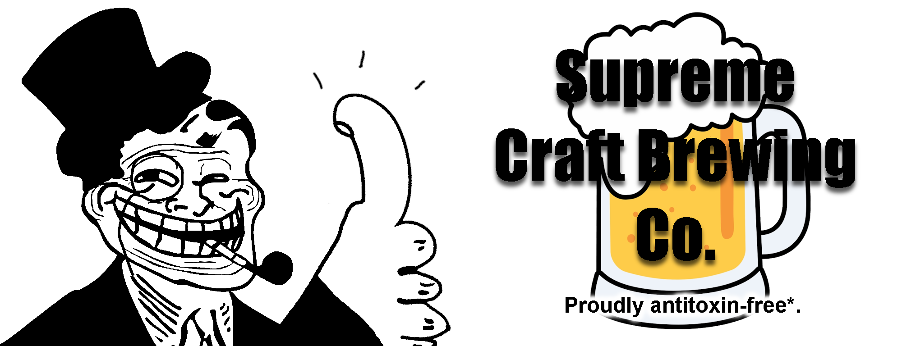

Home
About Us
Calculators
Recipes
Hydrometer
Calculations to change between Bricks, Spercific Gravity and Potential percentage. select the value you have, enter your value and the results will display.
Bricks
(%) Potential Percentage
(SG) Spercific Gravity
What Percentage is my Mixer
Calculations to show what percentage your drink will be after adding spirit.
select the percentage spirit, amount added and the cup size.
Please not this will not be 100% correct but will give a batter Idea.
Spirit Percentage (ABV)
Spirit ammount (mls)
Drink / Glass size (mls)